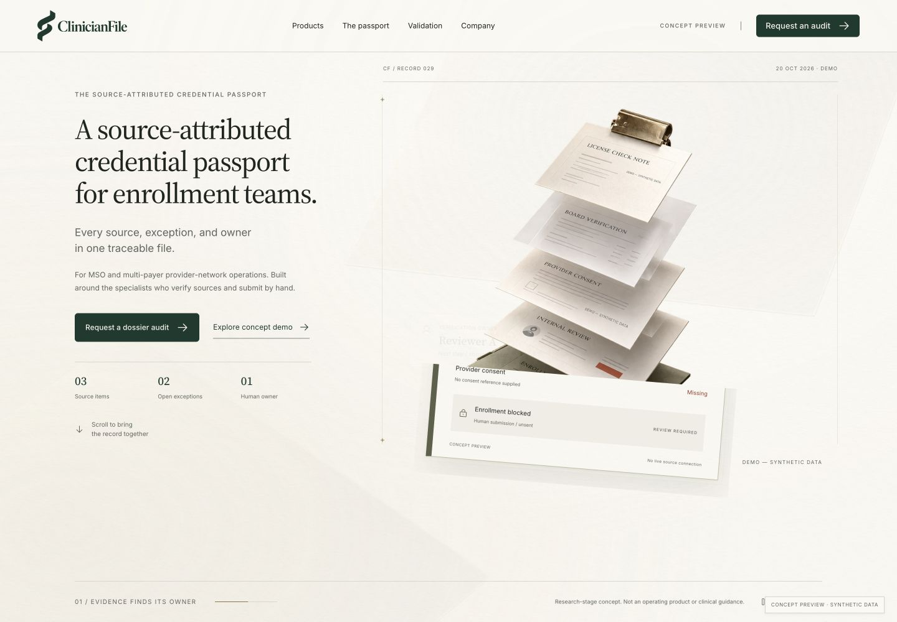
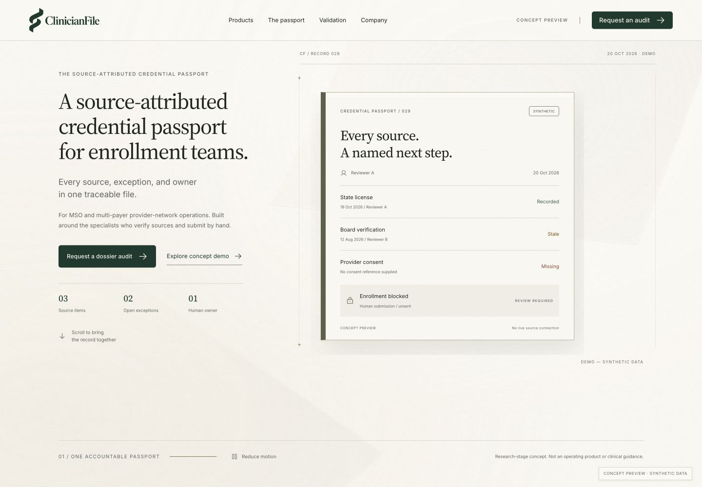
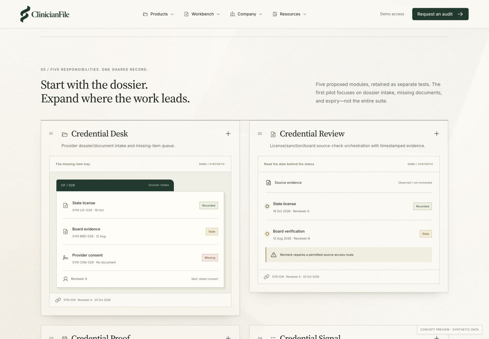
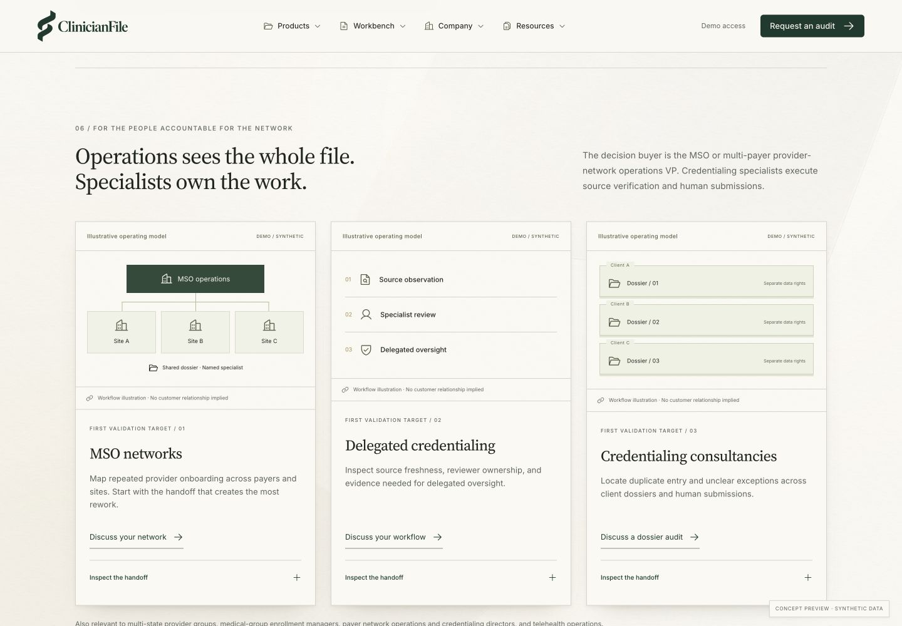

One continuous background. Twelve chapters of evidence.
The selected Suspended Record direction, the Source Stitch logo, and the approved brand kit are the visual contract. This storyboard explains every section’s purpose, trigger, movement, reverse behavior, and fallback.
The homepage is a working design prototype. The captures below show its actual browser rendering. Motion is native-scroll and layered-image based; final video production is a separate asset task.
Visual lock: the kit’s logo, fonts, icons, images, textures, colors, shadows, and radii are copied unchanged. The new page composition uses 46px desktop / 33px mobile hero type; 36px / 28px section titles; 14–16px explanatory copy; 12–13px dense product UI. No oversized bold display type.
The common canvas
A brighter warm-paper canvas (#FAF8F2) continues through every section, with the approved ivory texture and enlarged translucent vellum layers. Soft warm daylight adds depth without introducing a new accent palette. Forest #193A2E anchors the logo and actions. Olive bookcloth, vellum, and brass are the only material accents.
The common rhythm
1200px content width; 48px minimum desktop side margins; 20px mobile gutters. Sections use 88px vertical padding on large screens and 56px on mobile. Controls use the existing 44px target, 5px radius, warm shadows, and visible focus ring.
Desktop width above 800px and height above 700px: progress across the sticky opening.
Visible change
Approved raster dossier moves 22px left, 32px down, rotates −5 degrees and scales to 0.8. Source notes retreat; an opaque paper wipe reveals a real HTML passport summary. Original artwork fades only near the final phase. No status is approved by scrolling.
Up-scroll / reverse
Every transform and the paper reveal reverse with scroll position. Returning to the top restores the exact untransformed artwork.
Unpinned native document flow at width ≤800px or height ≤700px. Small image parallax, 33px mobile heading (31px at 320px), full source notes; real passport follows immediately.
Reduced motion
Unpinned still hero; no decorative parallax, transform, or reveal; real passport remains fully operable.
Immediately after the cinematic opening: filing tabs, olive bookcloth mount, paper workbench, three distinct status lanes.
Trigger
Passport mount enters viewport; deliberate scenario and evidence selection controls the data.
Visible change
Passport settles from a 55px rise, 5-degree perspective tilt and scale 0.975 to its final position. Three scenario tabs and provenance controls remain immediately usable.
Up-scroll / reverse
Entrance follows viewport position in both directions. Scrolling never changes the selected scenario or its status.
Timing / progress
Scroll-mapped entrance over up to 520px; 65ms damping. Tab changes remain immediate.
Mobile and short screens
Unpinned 18px entrance, scale 0.992–1, no tilt. Statuses stack; evidence table scrolls inside its container.
Reduced motion
Complete interactive passport; no movement needed.
Up-scroll separates the planes and restores the corresponding step. No unblocking or approval is represented by assembly.
Timing / progress
Spread maps 1→0.22 with normalized progress. Highlight changes at one-third boundaries.
Mobile and short screens
No pinning at ≤800px or height≤650px. Show all three steps and a complete layered still.
Reduced motion
No pinning; all steps fully opaque; spread 0.45.
Assembly keyframes / down-scroll and up-scroll
At the first frame, spread is 1. At the midpoint it is 0.61; near the human handoff it is 0.26. A reverse scroll returns to 1. These are actual captures from the same native-scroll scene, not separate generated images.
Scope explanation beside quiet paper form; official references and complete footer follow.
Trigger
CTA anchor or natural scroll; deliberate local form validation.
Visible change
Error messages name missing fields. A valid synthetic entry produces explicit local-only feedback. No sending, analytics, storage, booking, or payment.
Up-scroll / reverse
Entered values stay only in the current page until refresh; scroll has no effect.
These are actual local browser captures. The approved artwork stays unchanged; the scene, evidence annotations and HTML passport are animated on native scroll. The brighter background uses the same paper and vellum assets. This is a scroll compositor, not a rendered video.

02 / Evidence finds its owner.

03 / One accountable passport.
Motion production notes
The hero uses the existing full scene image. The assembly chapter uses the supplied cover and three transparent vellum layers. This preserves asset identity and supports reversible translation without inventing unseen 3D surfaces. No generic video or stock footage is introduced.
For a later film-quality hero loop: produce a 6–8 second muted macro shot of the same paper, clip and olive material, with the approved still as poster. Render WebM and MP4 variants; lazy-load below priority content; pause offscreen and on tab hide; expose a pause control. This is a production specification, not a video delivered in this design package.
Native scrolling stays intact. The opening and assembly use native sticky positioning. The opening releases below 801px width or 701px height; assembly releases below 801px width or 651px height; with reduced motion show all narrative steps together. Form values and demo statuses never change because of scroll progress.
Screenshot handoff
Desktop captures are 1440px wide, mobile captures 390px wide. The passport uses real HTML evidence, readable source dates, fictional reviewer roles, and persistent DEMO labels. Every screenshot is a local prototype capture; none depicts a production integration.
Every major homepage chapter now has a workflow-specific visual: selectable case cards, source slips, five module workspaces, network and oversight diagrams, permission records, pilot gates, a conditional roadmap, and an audit packet. Full explanatory copy and concept boundaries remain available.
Cards reveal detail by click, touch, or keyboard. Paper specimens shift gently into place as the viewport passes in either direction; content stays visible. Reduced motion removes these shifts. On mobile, card layouts follow a single reading order and evidence labels are enlarged.

Actual prototype capture / DEMO — SYNTHETIC DATA

Illustrative operating models / No customer relationships implied